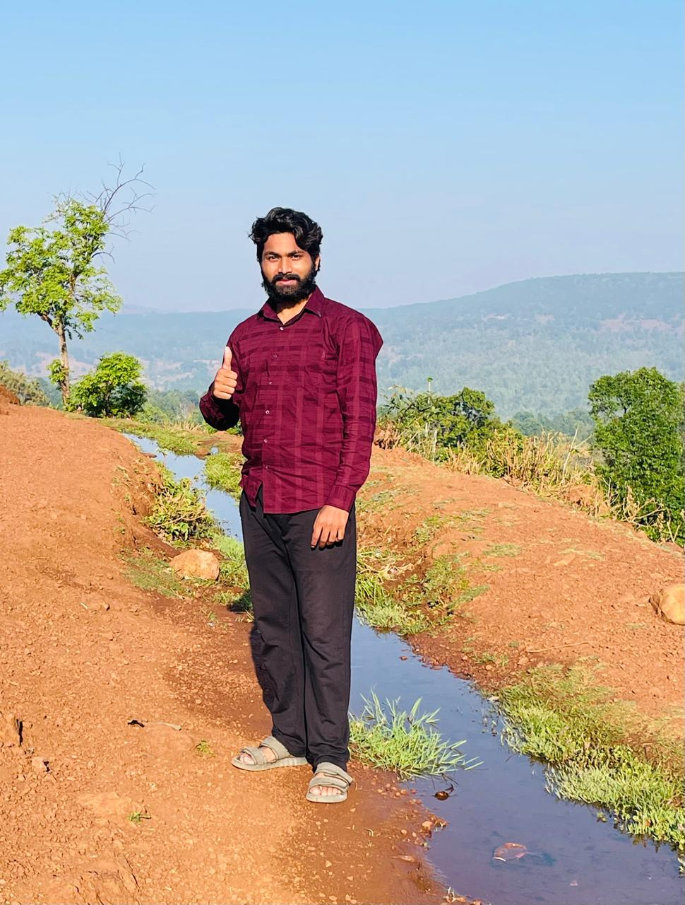

Turning complex data into intelligent, scalable web solutions.
A versatile engineer bridging the gap between robust web development and intelligent systems. I specialize in building full-stack applications, extracting data-driven insights, and deploying predictive machine learning models to solve real-world problems.
Branch: CSE
Semester: 7th
AI, ML & Full Stack
Explore Lab Experiments